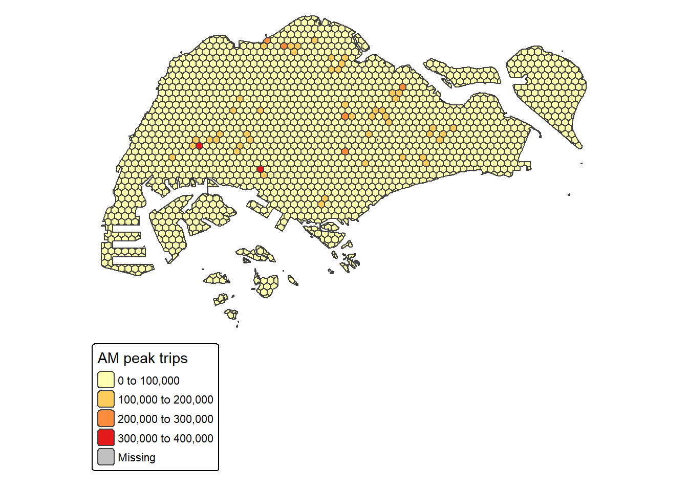
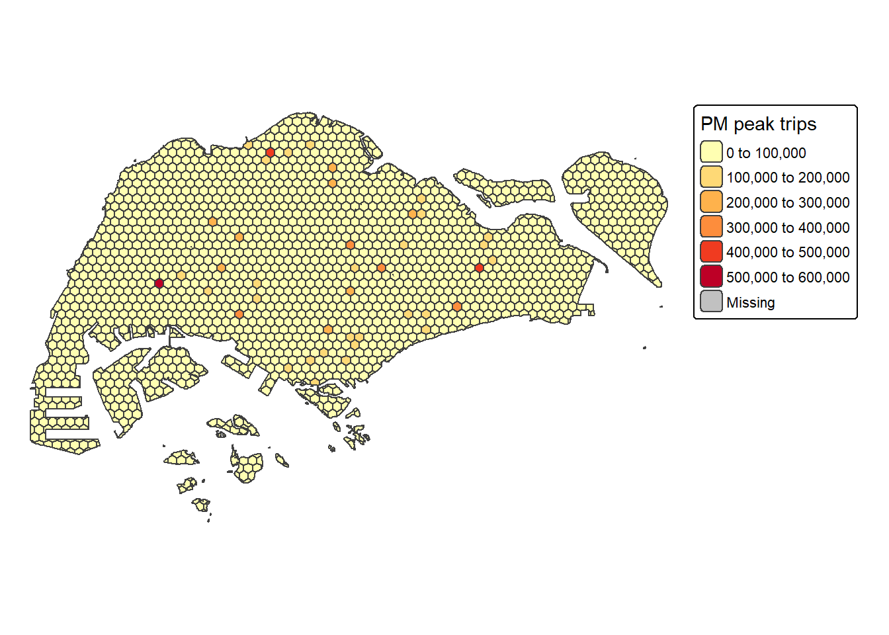
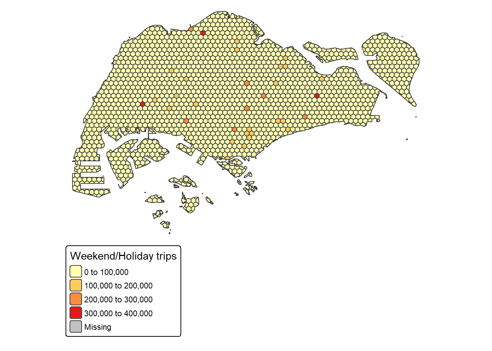
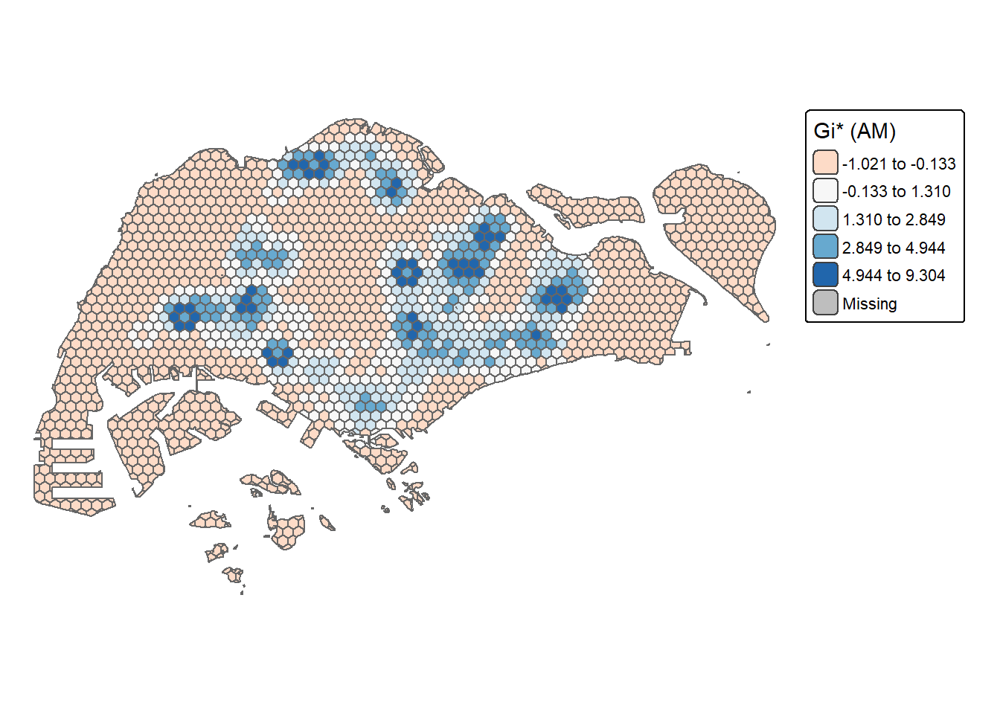
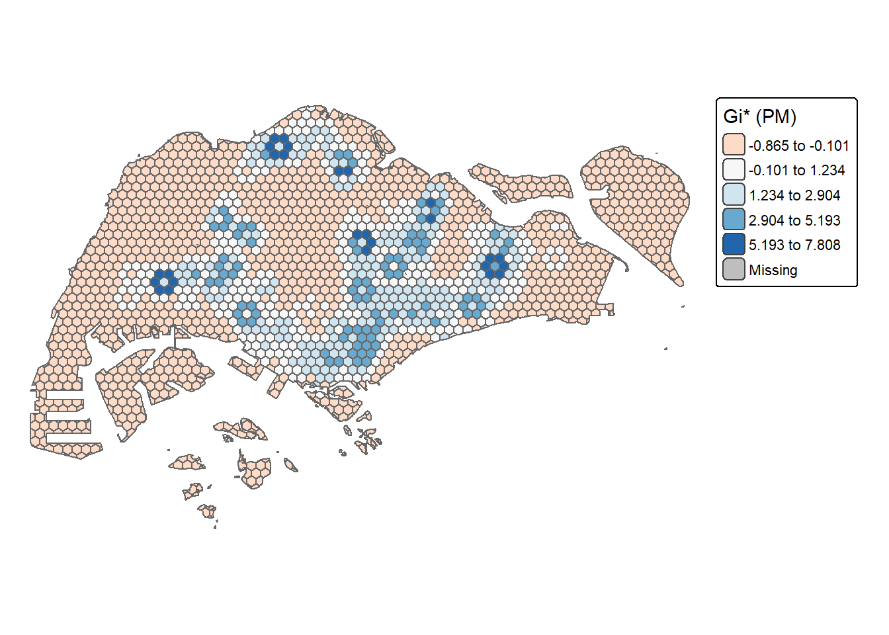
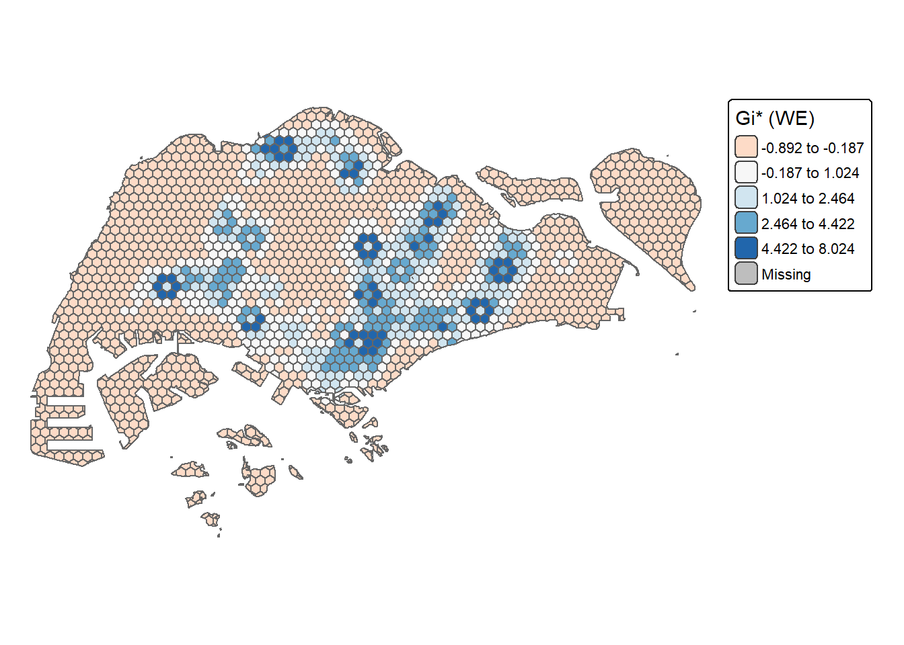
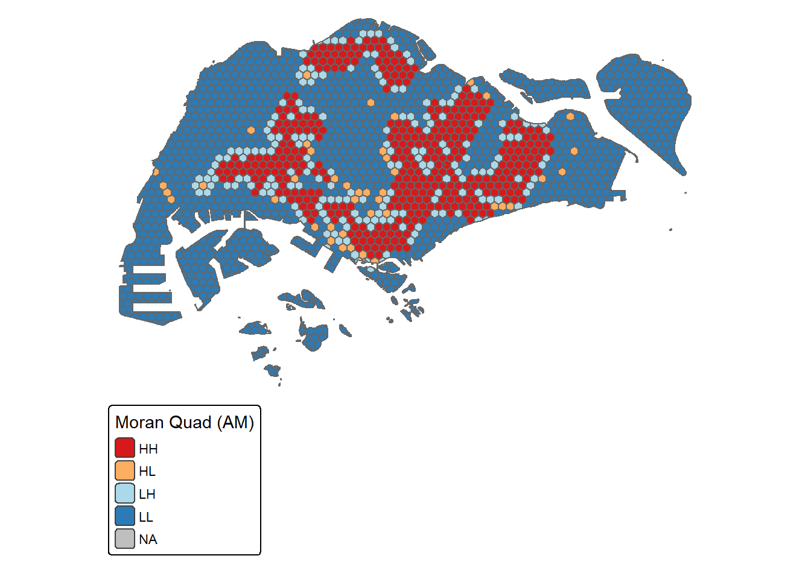
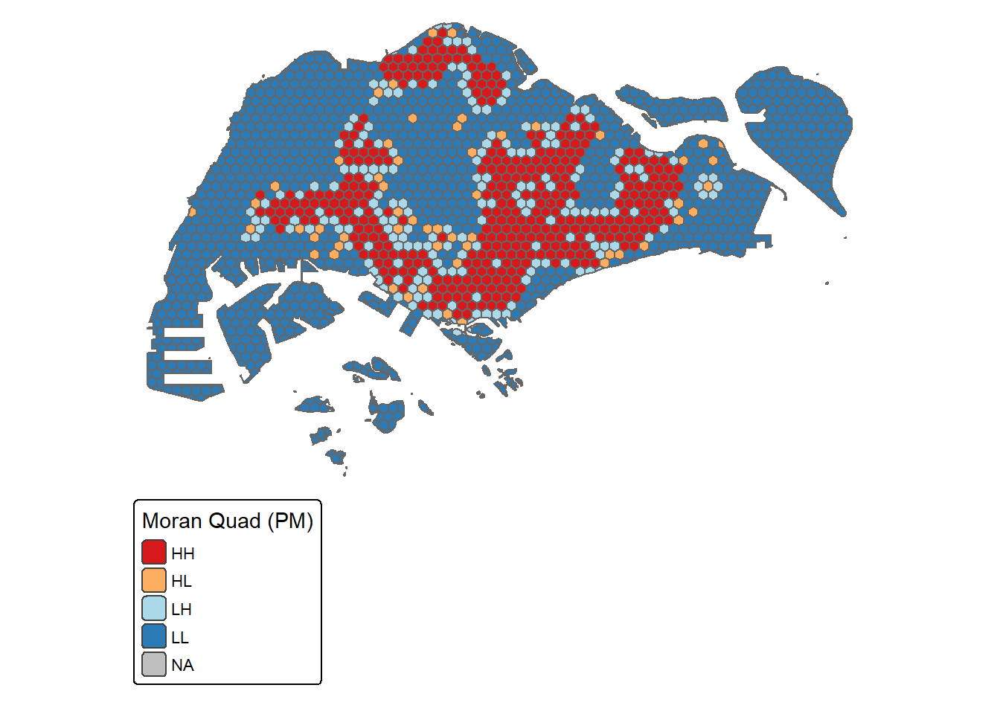
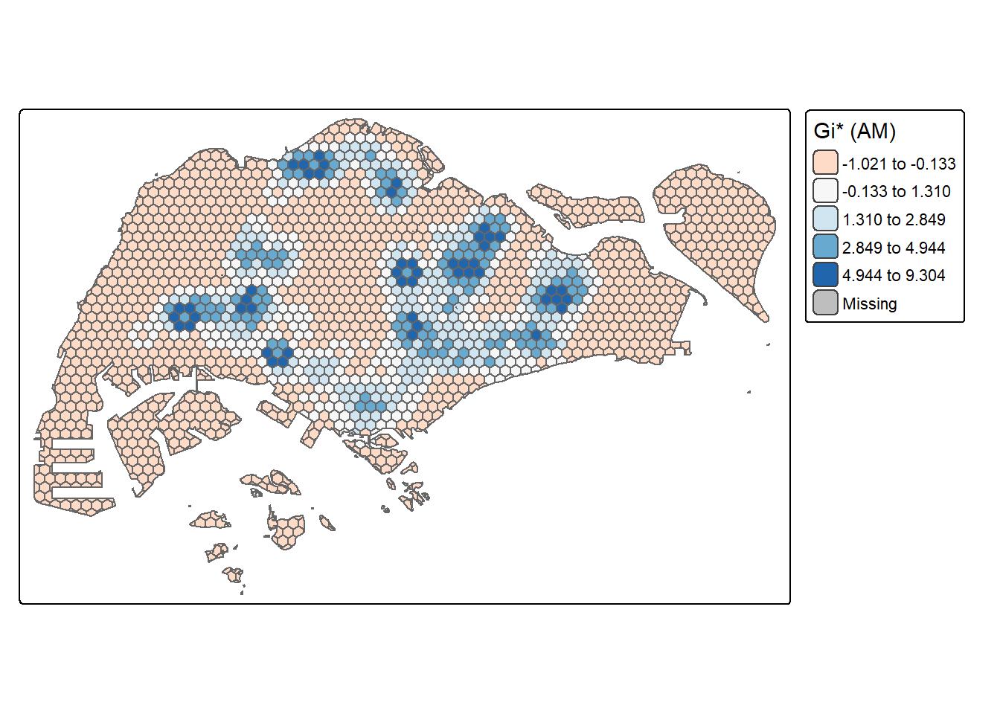

pacman::p_load(
# core wrangling
tidyverse, lubridate, readr, janitor,
# spatial
sf, sfheaders, tmap, terra,
# spatial stats
sfdep, spdep,
# trend test
Kendall
)Take home exercise 2
1 Overview
Urban mobility analysis can reveal how travel demand concentrates and evolves across space and time. In this study, we use LTA DataMall “Passenger Volume by Origin–Destination (Bus Stops)” to examine where origins generate more trips and how local clustering changes through time. We:
- Build a 375 m apothem hexagon grid as traffic analysis zones (TAZ).
- Aggregate origin trips for three policy windows:
- Weekday AM peak (06:00–09:00),
- Weekday PM peak (17:00–20:00),
- Weekend/holiday (11:00–20:00).
- Run Local Measures of Spatial Autocorrelation (LMSA): Local Moran’s I (hot/cold + outliers) and Getis-Ord Gi* (hot/cold).
- Run a lightweight Emerging Hot Spot Analysis (EHSA) by computing Gi* per time slice and testing temporal trends using Mann–Kendall.
Outputs include clean geovisualisations and short, decision-oriented summaries to support service planning and hotspot monitoring.
2 Packages
3 Data
# sanity checks (optional, but helps)
getwd()[1] "C:/Users/kchan/Desktop/chandru-ko/ISSS608-VAA/Take-home_Ex/Take_home_Ex02"file.exists("Data/Geospatial/MasterPlan2019SubzoneBoundaryNoSeaKML.kml")[1] TRUElibrary(sf)
mpsz <- st_read("Data/Geospatial/MasterPlan2019SubzoneBoundaryNoSeaKML.kml") |>
st_zm(drop = TRUE, what = "ZM") |>
st_transform(3414) |>
st_make_valid()Reading layer `URA_MP19_SUBZONE_NO_SEA_PL' from data source
`C:\Users\kchan\Desktop\chandru-ko\ISSS608-VAA\Take-home_Ex\Take_home_Ex02\Data\Geospatial\MasterPlan2019SubzoneBoundaryNoSeaKML.kml'
using driver `KML'
Simple feature collection with 332 features and 2 fields
Geometry type: MULTIPOLYGON
Dimension: XY
Bounding box: xmin: 103.6057 ymin: 1.158699 xmax: 104.0885 ymax: 1.470775
Geodetic CRS: WGS 84bus_stops <- st_read("Data/Geospatial/BusStopLocation_Aug2025/BusStop.shp") |>
st_transform(3414) |>
st_make_valid()Reading layer `BusStop' from data source
`C:\Users\kchan\Desktop\chandru-ko\ISSS608-VAA\Take-home_Ex\Take_home_Ex02\Data\Geospatial\BusStopLocation_Aug2025\BusStop.shp'
using driver `ESRI Shapefile'
Simple feature collection with 5172 features and 2 fields
Geometry type: POINT
Dimension: XY
Bounding box: xmin: 3970.122 ymin: 26482.1 xmax: 48285.52 ymax: 52983.82
Projected CRS: SVY21# --- OD passenger volumes (CSV) ---
library(readr); library(janitor); library(dplyr)
od_file <- "Data/Apstial/origin_destination_bus_202508.csv" # folder name is 'Apstial'
stopifnot(file.exists(od_file))
od <- read_csv(
od_file,
show_col_types = FALSE,
guess_max = 1e6,
progress = FALSE
) |>
clean_names()
glimpse(od)Rows: 5,876,969
Columns: 7
$ year_month <chr> "2025-08", "2025-08", "2025-08", "2025-08", "2025-…
$ day_type <chr> "WEEKENDS/HOLIDAY", "WEEKENDS/HOLIDAY", "WEEKENDS/…
$ time_per_hour <dbl> 9, 13, 21, 16, 18, 14, 20, 12, 23, 20, 5, 16, 6, 2…
$ pt_type <chr> "BUS", "BUS", "BUS", "BUS", "BUS", "BUS", "BUS", "…
$ origin_pt_code <chr> "84671", "10099", "64601", "53009", "80051", "7003…
$ destination_pt_code <chr> "84131", "09048", "64611", "50029", "70251", "0122…
$ total_trips <dbl> 3, 31, 3, 10, 4, 1, 10, 4, 21, 17, 1, 512, 1, 2, 1…4) Build hex TAZ & aggregate trips
Created a 375 m-apothem hexagon grid over the URA subzone boundary to serve as uniform Traffic Analysis Zones (TAZ). Assigned each origin bus stop to a hex and summed tap-ons at hex level for three windows: Weekday AM (06–09), Weekday PM (17–20), Weekend/Holiday (11–20). Produced an sf hex layer with one trips field per window, suitable for mapping and downstream statistics.
library(dplyr)
library(janitor)
# 1) Normalise bus stop id column to `stop_code`
bus_stops <- bus_stops %>%
clean_names()
nm <- names(bus_stops)
stop_col <- case_when(
"bus_stop_n" %in% nm ~ "bus_stop_n",
"busstopcode" %in% nm ~ "busstopcode",
"bus_stop" %in% nm ~ "bus_stop",
"stop_code" %in% nm ~ "stop_code",
TRUE ~ NA_character_
)
stopifnot(!is.na(stop_col))
bus_stops <- bus_stops %>%
rename(stop_code = all_of(stop_col)) %>%
mutate(stop_code = as.character(stop_code))
# 2) Ensure OD keys are character too
od <- od %>%
clean_names() %>%
mutate(
origin_pt_code = as.character(origin_pt_code),
destination_pt_code = as.character(destination_pt_code)
)names(bus_stops) # should include "stop_code"[1] "stop_code" "loc_desc" "geometry" names(od) # should include "origin_pt_code","day_type","time_per_hour","total_trips"[1] "year_month" "day_type" "time_per_hour"
[4] "pt_type" "origin_pt_code" "destination_pt_code"
[7] "total_trips" library(dplyr)
# keep only what we need from OD and align the join key to "stop_code"
od_min <- od %>%
transmute(
stop_code = as.character(origin_pt_code),
year_month, day_type, time_per_hour, total_trips
)
# join attributes onto the bus_stop geometries (origin locations)
od_pts <- bus_stops %>%
mutate(stop_code = as.character(stop_code)) %>%
inner_join(od_min, by = "stop_code")Warning in sf_column %in% names(g): Detected an unexpected many-to-many relationship between `x` and `y`.
ℹ Row 1 of `x` matches multiple rows in `y`.
ℹ Row 20378 of `y` matches multiple rows in `x`.
ℹ If a many-to-many relationship is expected, set `relationship =
"many-to-many"` to silence this warning.# quick sanity
nrow(od_pts)[1] 5808460head(st_drop_geometry(od_pts)) stop_code loc_desc year_month day_type time_per_hour total_trips
1 65059 ST ANNE'S CH 2025-08 WEEKENDS/HOLIDAY 14 1
2 65059 ST ANNE'S CH 2025-08 WEEKENDS/HOLIDAY 16 6
3 65059 ST ANNE'S CH 2025-08 WEEKDAY 18 7
4 65059 ST ANNE'S CH 2025-08 WEEKENDS/HOLIDAY 9 2
5 65059 ST ANNE'S CH 2025-08 WEEKENDS/HOLIDAY 19 6
6 65059 ST ANNE'S CH 2025-08 WEEKDAY 10 2library(dplyr)
library(sf)
# ---- Hex grid (375 m apothem) ----
apothem <- 375
cell_x <- 2 * apothem
cell_y <- sqrt(3) * apothem
hex0 <- st_make_grid(
mpsz,
what = "polygons",
square = FALSE,
cellsize = c(cell_x, cell_y)
)
hex <- st_sf(hex_id = seq_along(hex0), geometry = hex0) |>
st_make_valid() |>
st_intersection(st_union(mpsz)) |>
st_make_valid()Warning: attribute variables are assumed to be spatially constant throughout
all geometries# ---- Tag each origin point with hex_id (keep separate object) ----
od_pts_hex <- st_join(od_pts, hex |> dplyr::select(hex_id), left = FALSE)
# ---- Aggregate trips for the three policy windows (across all months) ----
is_wk_am <- function(x_day, x_hr) x_day == "WEEKDAY" & x_hr %in% 6:9
is_wk_pm <- function(x_day, x_hr) x_day == "WEEKDAY" & x_hr %in% 17:20
is_wknd <- function(x_day, x_hr) x_day == "WEEKENDS/HOLIDAY" & x_hr %in% 11:20
agg_df <- od_pts_hex |>
st_drop_geometry() |>
group_by(hex_id) |>
summarise(
trips_am = sum(total_trips[ is_wk_am(day_type, time_per_hour) ], na.rm = TRUE),
trips_pm = sum(total_trips[ is_wk_pm(day_type, time_per_hour) ], na.rm = TRUE),
trips_we = sum(total_trips[ is_wknd(day_type, time_per_hour) ], na.rm = TRUE),
.groups = "drop"
)
hex <- hex |>
left_join(agg_df, by = "hex_id") |>
mutate(across(starts_with("trips_"), \(v) tidyr::replace_na(v, 0)))library(tmap)
tmap_mode("plot")ℹ tmap mode set to "plot".tm_shape(hex) +
tm_polygons("trips_am", palette = "YlOrRd", title = "AM peak trips") +
tm_layout(frame = FALSE)
── tmap v3 code detected ───────────────────────────────────────────────────────
[v3->v4] `tm_tm_polygons()`: migrate the argument(s) related to the scale of
the visual variable `fill` namely 'palette' (rename to 'values') to fill.scale
= tm_scale(<HERE>).[v3->v4] `tm_polygons()`: migrate the argument(s) related to the legend of the
visual variable `fill` namely 'title' to 'fill.legend = tm_legend(<HERE>)'[cols4all] color palettes: use palettes from the R package cols4all. Run
`cols4all::c4a_gui()` to explore them. The old palette name "YlOrRd" is named
"brewer.yl_or_rd"Multiple palettes called "yl_or_rd" found: "brewer.yl_or_rd", "matplotlib.yl_or_rd". The first one, "brewer.yl_or_rd", is returned.
tm_shape(hex) +
tm_polygons("trips_pm", palette = "YlOrRd", title = "PM peak trips") +
tm_layout(frame = FALSE)
── tmap v3 code detected ───────────────────────────────────────────────────────
[v3->v4] `tm_tm_polygons()`: migrate the argument(s) related to the scale of
the visual variable `fill` namely 'palette' (rename to 'values') to fill.scale
= tm_scale(<HERE>).[v3->v4] `tm_polygons()`: migrate the argument(s) related to the legend of the
visual variable `fill` namely 'title' to 'fill.legend = tm_legend(<HERE>)'[cols4all] color palettes: use palettes from the R package cols4all. Run
`cols4all::c4a_gui()` to explore them. The old palette name "YlOrRd" is named
"brewer.yl_or_rd"Multiple palettes called "yl_or_rd" found: "brewer.yl_or_rd", "matplotlib.yl_or_rd". The first one, "brewer.yl_or_rd", is returned.
tm_shape(hex) +
tm_polygons("trips_we", palette = "YlOrRd", title = "Weekend/Holiday trips") +
tm_layout(frame = FALSE)
── tmap v3 code detected ───────────────────────────────────────────────────────
[v3->v4] `tm_tm_polygons()`: migrate the argument(s) related to the scale of
the visual variable `fill` namely 'palette' (rename to 'values') to fill.scale
= tm_scale(<HERE>).[v3->v4] `tm_polygons()`: migrate the argument(s) related to the legend of the
visual variable `fill` namely 'title' to 'fill.legend = tm_legend(<HERE>)'[cols4all] color palettes: use palettes from the R package cols4all. Run
`cols4all::c4a_gui()` to explore them. The old palette name "YlOrRd" is named
"brewer.yl_or_rd"Multiple palettes called "yl_or_rd" found: "brewer.yl_or_rd", "matplotlib.yl_or_rd". The first one, "brewer.yl_or_rd", is returned.
5) LMSA (Local Moran’s I, Local Geary’s C, Getis-Ord Gi*)
Built queen-contiguity neighbours on the hex TAZ and row-standardised spatial weights. For each window (AM, PM, Weekend), computed three local statistics: (i) Local Moran’s I to identify hot/cold clusters and spatial outliers, (ii) Local Geary’s C to flag local dissimilarity, and (iii) Getis-Ord Gi* to locate high/low concentration without relying on global mean/variance. Results retain each statistic, a two-sided p-value (permutation for Moran/Geary; z-based for Gi*), and a significance mask (p < 0.05). For Moran, also derived HH/LL/HL/LH quadrant labels (mean-centered) for quick mapping.
# --- 5) Local Measures of Spatial Autocorrelation (LMSA) ---
# Needs: hex (sf polygons) with trips_am, trips_pm, trips_we
library(dplyr)
library(sf)
library(spdep)
# small helper for "a %||% b"
`%||%` <- function(a, b) if (!is.null(a)) a else b
# 5.1 neighbours (queen) & row-standardised weights
nb_q <- spdep::poly2nb(hex, queen = TRUE, row.names = hex$hex_id)Warning in spdep::poly2nb(hex, queen = TRUE, row.names = hex$hex_id): some observations have no neighbours;
if this seems unexpected, try increasing the snap argument.Warning in spdep::poly2nb(hex, queen = TRUE, row.names = hex$hex_id): neighbour object has 19 sub-graphs;
if this sub-graph count seems unexpected, try increasing the snap argument.lw_q <- spdep::nb2listw(nb_q, style = "W", zero.policy = TRUE) # row-standardised
# 5.2 function to run Gi* + Local Moran’s I for one numeric field
run_lmsa <- function(hex, value_col, lw_q, nsim = 199) {
x <- hex[[value_col]]
# z-score and spatial lag of z
z <- as.numeric(scale(x))
lagz <- spdep::lag.listw(lw_q, z, zero.policy = TRUE)
# --- Local Moran’s I ---
if ("localmoran_perm" %in% getNamespaceExports("spdep")) {
mor <- spdep::localmoran_perm(x, lw_q, nsim = nsim, zero.policy = TRUE)
Ii <- mor[, 1]
p_I <- mor[, 5]
} else {
mor <- spdep::localmoran(x, lw_q, zero.policy = TRUE)
Ii <- mor[, 1]
p_I <- mor[, 5]
}
# quadrant for Moran scatterplot (not significance-filtered)
quad <- dplyr::case_when(
z >= 0 & lagz >= 0 ~ "HH",
z <= 0 & lagz <= 0 ~ "LL",
z >= 0 & lagz <= 0 ~ "HL",
z <= 0 & lagz >= 0 ~ "LH",
TRUE ~ NA_character_
)
# --- Getis–Ord Gi* ---
if ("localG_perm" %in% getNamespaceExports("spdep")) {
Gi <- spdep::localG_perm(x, lw_q, nsim = nsim, zero.policy = TRUE)
Gi <- as.numeric(Gi)
# some builds attach p-values as attributes; if not, fall back to normal approx
p_G <- attr(Gi, "p.values") %||% attr(Gi, "p.values.two.sided") %||% (2 * pnorm(-abs(Gi)))
} else {
Gi <- as.numeric(spdep::localG(x, lw_q, zero.policy = TRUE))
p_G <- 2 * pnorm(-abs(Gi))
}
# assemble tidy columns
tibble::tibble(
!!paste0(value_col, "_I") := Ii,
!!paste0(value_col, "_I_p") := p_I,
!!paste0(value_col, "_I_quad") := quad,
!!paste0(value_col, "_I_sig") := p_I < 0.05,
!!paste0(value_col, "_Gi") := Gi,
!!paste0(value_col, "_Gi_p") := p_G,
!!paste0(value_col, "_Gi_sig") := p_G < 0.05
)
}
# 5.3 Run LMSA for the three windows -> one sf with all results
hex_lmsa <- dplyr::bind_cols(
hex,
run_lmsa(hex, "trips_am", lw_q, nsim = 199),
run_lmsa(hex, "trips_pm", lw_q, nsim = 199),
run_lmsa(hex, "trips_we", lw_q, nsim = 199)
)
# 5.4 Quick significance counts (optional sanity)
summ_counts <- function(g, v) {
tibble::tibble(
window = v,
n_hotGi = sum(g[[paste0(v, "_Gi_sig")]] & g[[paste0(v, "_Gi")]] > 0, na.rm = TRUE),
n_coldGi = sum(g[[paste0(v, "_Gi_sig")]] & g[[paste0(v, "_Gi")]] < 0, na.rm = TRUE),
n_HH = sum(g[[paste0(v, "_I_sig")]] & g[[paste0(v, "_I_quad")]] == "HH", na.rm = TRUE),
n_LL = sum(g[[paste0(v, "_I_sig")]] & g[[paste0(v, "_I_quad")]] == "LL", na.rm = TRUE),
n_HL = sum(g[[paste0(v, "_I_sig")]] & g[[paste0(v, "_I_quad")]] == "HL", na.rm = TRUE),
n_LH = sum(g[[paste0(v, "_I_sig")]] & g[[paste0(v, "_I_quad")]] == "LH", na.rm = TRUE)
)
}
sig_summary <- dplyr::bind_rows(
summ_counts(hex_lmsa, "trips_am"),
summ_counts(hex_lmsa, "trips_pm"),
summ_counts(hex_lmsa, "trips_we")
)
sig_summary# A tibble: 3 × 7
window n_hotGi n_coldGi n_HH n_LL n_HL n_LH
<chr> <int> <int> <int> <int> <int> <int>
1 trips_am 270 0 236 0 0 31
2 trips_pm 214 0 186 0 0 31
3 trips_we 226 0 193 0 0 33# --- 5.x Visualise LMSA results (Gi* and Moran quadrants) ---
library(tmap)
tmap_mode("plot")ℹ tmap mode set to "plot".tmap_options(component.autoscale = FALSE)
## --- Getis–Ord Gi* (hot/cold; z-scores) ---
# AM
tm_shape(hex_lmsa) +
tm_polygons("trips_am_Gi",
style = "fisher", palette = "RdBu", midpoint = 0,
title = "Gi* (AM)") +
tm_borders(col = "grey40") +
tm_layout(frame = FALSE)
── tmap v3 code detected ───────────────────────────────────────────────────────
[v3->v4] `tm_polygons()`: instead of `style = "fisher"`, use fill.scale =
`tm_scale_intervals()`.
ℹ Migrate the argument(s) 'style', 'midpoint', 'palette' (rename to 'values')
to 'tm_scale_intervals(<HERE>)'
For small multiples, specify a 'tm_scale_' for each multiple, and put them in a
list: 'fill'.scale = list(<scale1>, <scale2>, ...)'[v3->v4] `tm_polygons()`: migrate the argument(s) related to the legend of the
visual variable `fill` namely 'title' to 'fill.legend = tm_legend(<HERE>)'[cols4all] color palettes: use palettes from the R package cols4all. Run
`cols4all::c4a_gui()` to explore them. The old palette name "RdBu" is named
"brewer.rd_bu"Multiple palettes called "rd_bu" found: "brewer.rd_bu", "matplotlib.rd_bu". The first one, "brewer.rd_bu", is returned.
# PM
tm_shape(hex_lmsa) +
tm_polygons("trips_pm_Gi",
style = "fisher", palette = "RdBu", midpoint = 0,
title = "Gi* (PM)") +
tm_borders(col = "grey40") +
tm_layout(frame = FALSE)
── tmap v3 code detected ───────────────────────────────────────────────────────
[v3->v4] `tm_polygons()`: instead of `style = "fisher"`, use fill.scale =
`tm_scale_intervals()`.
ℹ Migrate the argument(s) 'style', 'midpoint', 'palette' (rename to 'values')
to 'tm_scale_intervals(<HERE>)'
For small multiples, specify a 'tm_scale_' for each multiple, and put them in a
list: 'fill'.scale = list(<scale1>, <scale2>, ...)'[v3->v4] `tm_polygons()`: migrate the argument(s) related to the legend of the
visual variable `fill` namely 'title' to 'fill.legend = tm_legend(<HERE>)'[cols4all] color palettes: use palettes from the R package cols4all. Run
`cols4all::c4a_gui()` to explore them. The old palette name "RdBu" is named
"brewer.rd_bu"Multiple palettes called "rd_bu" found: "brewer.rd_bu", "matplotlib.rd_bu". The first one, "brewer.rd_bu", is returned.
# Weekend / Holiday
tm_shape(hex_lmsa) +
tm_polygons("trips_we_Gi",
style = "fisher", palette = "RdBu", midpoint = 0,
title = "Gi* (WE)") +
tm_borders(col = "grey40") +
tm_layout(frame = FALSE)
── tmap v3 code detected ───────────────────────────────────────────────────────
[v3->v4] `tm_polygons()`: instead of `style = "fisher"`, use fill.scale =
`tm_scale_intervals()`.
ℹ Migrate the argument(s) 'style', 'midpoint', 'palette' (rename to 'values')
to 'tm_scale_intervals(<HERE>)'
For small multiples, specify a 'tm_scale_' for each multiple, and put them in a
list: 'fill'.scale = list(<scale1>, <scale2>, ...)'[v3->v4] `tm_polygons()`: migrate the argument(s) related to the legend of the
visual variable `fill` namely 'title' to 'fill.legend = tm_legend(<HERE>)'[cols4all] color palettes: use palettes from the R package cols4all. Run
`cols4all::c4a_gui()` to explore them. The old palette name "RdBu" is named
"brewer.rd_bu"Multiple palettes called "rd_bu" found: "brewer.rd_bu", "matplotlib.rd_bu". The first one, "brewer.rd_bu", is returned.
## --- (Optional) Local Moran’s I quadrants (HH/LL/HL/LH) ---
quad_pal <- c(HH = "#D7191C", LL = "#2C7BB6", HL = "#FDAE61", LH = "#ABD9E9")
# AM quadrants
tm_shape(hex_lmsa) +
tm_polygons("trips_am_I_quad",
palette = quad_pal, title = "Moran Quad (AM)",
textNA = "NA") +
tm_borders(col = "grey40") +
tm_layout(frame = FALSE)
── tmap v3 code detected ───────────────────────────────────────────────────────
[v3->v4] `tm_tm_polygons()`: migrate the argument(s) related to the scale of
the visual variable `fill` namely 'palette' (rename to 'values'), 'textNA'
(rename to 'label.na') to fill.scale = tm_scale(<HERE>).
ℹ For small multiples, specify a 'tm_scale_' for each multiple, and put them in
a list: 'fill.scale = list(<scale1>, <scale2>, ...)'[v3->v4] `tm_polygons()`: migrate the argument(s) related to the legend of the
visual variable `fill` namely 'title' to 'fill.legend = tm_legend(<HERE>)'
# PM quadrants
tm_shape(hex_lmsa) +
tm_polygons("trips_pm_I_quad",
palette = quad_pal, title = "Moran Quad (PM)",
textNA = "NA") +
tm_borders(col = "grey40") +
tm_layout(frame = FALSE)
── tmap v3 code detected ───────────────────────────────────────────────────────
[v3->v4] `tm_tm_polygons()`: migrate the argument(s) related to the scale of
the visual variable `fill` namely 'palette' (rename to 'values'), 'textNA'
(rename to 'label.na') to fill.scale = tm_scale(<HERE>).
ℹ For small multiples, specify a 'tm_scale_' for each multiple, and put them in
a list: 'fill.scale = list(<scale1>, <scale2>, ...)'[v3->v4] `tm_polygons()`: migrate the argument(s) related to the legend of the
visual variable `fill` namely 'title' to 'fill.legend = tm_legend(<HERE>)'
# WE quadrants
tm_shape(hex_lmsa) +
tm_polygons("trips_we_I_quad",
palette = quad_pal, title = "Moran Quad (WE)",
textNA = "NA") +
tm_borders(col = "grey40") +
tm_layout(frame = FALSE)
── tmap v3 code detected ───────────────────────────────────────────────────────
[v3->v4] `tm_tm_polygons()`: migrate the argument(s) related to the scale of
the visual variable `fill` namely 'palette' (rename to 'values'), 'textNA'
(rename to 'label.na') to fill.scale = tm_scale(<HERE>).
ℹ For small multiples, specify a 'tm_scale_' for each multiple, and put them in
a list: 'fill.scale = list(<scale1>, <scale2>, ...)'[v3->v4] `tm_polygons()`: migrate the argument(s) related to the legend of the
visual variable `fill` namely 'title' to 'fill.legend = tm_legend(<HERE>)'library(tmap)
tmap_mode("plot") # or "view"ℹ tmap mode set to "plot".tm_shape(hex_lmsa) +
tm_polygons("trips_am_Gi",
style = "fisher",
palette = "RdBu",
midpoint = 0,
title = "Gi* (AM)") +
tm_borders(col = "grey40")
── tmap v3 code detected ───────────────────────────────────────────────────────
[v3->v4] `tm_polygons()`: instead of `style = "fisher"`, use fill.scale =
`tm_scale_intervals()`.
ℹ Migrate the argument(s) 'style', 'midpoint', 'palette' (rename to 'values')
to 'tm_scale_intervals(<HERE>)'
For small multiples, specify a 'tm_scale_' for each multiple, and put them in a
list: 'fill'.scale = list(<scale1>, <scale2>, ...)'[v3->v4] `tm_polygons()`: migrate the argument(s) related to the legend of the
visual variable `fill` namely 'title' to 'fill.legend = tm_legend(<HERE>)'[cols4all] color palettes: use palettes from the R package cols4all. Run
`cols4all::c4a_gui()` to explore them. The old palette name "RdBu" is named
"brewer.rd_bu"Multiple palettes called "rd_bu" found: "brewer.rd_bu", "matplotlib.rd_bu". The first one, "brewer.rd_bu", is returned.
6)Emerging Hot Spot Analysis (EHSA) on Monthly Gi
Built a monthly space–time view of trip intensity by aggregating origin tap-ons per hexagon for each policy window (AM, PM, weekend/holiday). For every month we computed local Getis–Ord Gi* to obtain a z-score surface of hot/cold clustering. For each hex we then applied a Mann–Kendall trend test across the monthly Gi* sequence and assigned an EHSA label: “new”, “intensifying”, “persistent”, “diminishing”, or “sporadic” hot/cold, otherwise “no pattern.” The result identifies where demand clusters are strengthening, weakening, or newly emerging, giving operators a time-aware basis for targeted service adjustments and monitoring.
# --- 6) EHSA-style trend on monthly Gi* ------------------------------
library(dplyr)
library(tidyr)
library(purrr)
library(spdep)
library(Kendall)
library(tmap)
# rebuild weights if needed (reuses §5 objects when present)
if (!exists("lw_q")) {
nb_q <- sfdep::st_contiguity(hex) # queen neighbours
lw_q <- sfdep::st_weights(nb_q, allow_zero = TRUE) # keep islands
}
# Window helpers (same logic as §4)
is_wk_am <- function(x_day, x_hr) x_day == "WEEKDAY" & x_hr %in% 6:9
is_wk_pm <- function(x_day, x_hr) x_day == "WEEKDAY" & x_hr %in% 17:20
is_wknd <- function(x_day, x_hr) x_day == "WEEKENDS/HOLIDAY" & x_hr %in% 11:20
# 6.1 Aggregate monthly per hex (adds hex_id if missing)
agg_monthly <- function(pts_sf, hex_sf, is_window_fn) {
pts2 <- pts_sf
if (!"hex_id" %in% names(pts2)) {
pts2 <- sf::st_join(pts2, dplyr::select(hex_sf, hex_id), left = FALSE)
}
trips_wide <- pts2 %>%
dplyr::filter(is_window_fn(day_type, time_per_hour)) %>%
sf::st_drop_geometry() %>%
dplyr::count(hex_id, year_month, wt = total_trips, name = "trips") %>%
tidyr::pivot_wider(names_from = year_month, values_from = trips, values_fill = 0)
hex_index <- hex_sf %>% sf::st_drop_geometry() %>% dplyr::select(hex_id)
# keep every hex (even with zero trips)
hex_sf %>% dplyr::left_join(dplyr::left_join(hex_index, trips_wide, by = "hex_id"),
by = "hex_id")
}
# 6.2 Compute monthly Gi* series (z-scores)
localGi_over_time <- function(sf_wide, lw, month_cols) {
gi_mat <- purrr::map_dfc(month_cols, function(m) {
x <- sf_wide[[m]]
x[is.na(x)] <- 0
z <- spdep::localG(x, lw, zero.policy = TRUE)
tibble::tibble(!!paste0("gi_", m) := as.numeric(z))
})
dplyr::bind_cols(sf_wide %>% dplyr::select(hex_id), gi_mat) %>%
sf::st_as_sf(sf::st_geometry(sf_wide))
}
# 6.3 Simple EHSA labels from MK trend on |Gi*| + "new" last-month flag
label_each_hex <- function(gi_sf, month_cols) {
gi_cols <- paste0("gi_", month_cols)
last_col <- gi_cols[length(gi_cols)]
mk <- apply(sf::st_drop_geometry(gi_sf)[, gi_cols, drop = FALSE], 1, function(v) {
v[is.na(v)] <- 0
Kendall::MannKendall(abs(v))
})
tau <- sapply(mk, `[[`, "tau")
pval <- sapply(mk, `[[`, "sl")
trend <- dplyr::case_when(
pval < 0.05 & tau > 0 ~ "Intensifying",
pval < 0.05 & tau < 0 ~ "Diminishing",
TRUE ~ "No trend"
)
last_z <- gi_sf[[last_col]]
prev_max <- apply(sf::st_drop_geometry(gi_sf)[, gi_cols[-length(gi_cols)], drop = FALSE],
1, function(v) max(abs(replace(v, is.na(v), 0))))
new_flag <- abs(last_z) >= 1.96 & prev_max < 1.96
ehsa <- dplyr::case_when(
new_flag & last_z >= 1.96 ~ "New Hot",
new_flag & last_z <= -1.96 ~ "New Cold",
trend == "Intensifying" & last_z >= 1.96 ~ "Intensifying Hot",
trend == "Intensifying" & last_z <= -1.96 ~ "Intensifying Cold",
trend == "Diminishing" & last_z >= 1.96 ~ "Diminishing Hot",
trend == "Diminishing" & last_z <= -1.96 ~ "Diminishing Cold",
TRUE ~ "No Pattern"
)
dplyr::mutate(gi_sf, ehsa = ehsa)
}
# 6.4 Build monthly-wide tables —— NOTE: use od_pts_hex here
am_wide <- agg_monthly(od_pts_hex, hex, is_wk_am)
pm_wide <- agg_monthly(od_pts_hex, hex, is_wk_pm)
we_wide <- agg_monthly(od_pts_hex, hex, is_wknd)
am_month_cols <- setdiff(names(am_wide), c("hex_id", "geometry"))
pm_month_cols <- setdiff(names(pm_wide), c("hex_id", "geometry"))
we_month_cols <- setdiff(names(we_wide), c("hex_id", "geometry"))
# (optional) sanity
sapply(list(AM = am_month_cols, PM = pm_month_cols, WE = we_month_cols), length)AM PM WE
4 4 4 # 6.5 Gi* time series & EHSA labels
am_gi <- localGi_over_time(am_wide, lw_q, am_month_cols)
pm_gi <- localGi_over_time(pm_wide, lw_q, pm_month_cols)
we_gi <- localGi_over_time(we_wide, lw_q, we_month_cols)
ehsa_am <- label_each_hex(am_gi, am_month_cols)WARNING: Error exit, tauk2. IFAULT = 12
WARNING: Error exit, tauk2. IFAULT = 12
WARNING: Error exit, tauk2. IFAULT = 12
WARNING: Error exit, tauk2. IFAULT = 12
WARNING: Error exit, tauk2. IFAULT = 12
WARNING: Error exit, tauk2. IFAULT = 12
WARNING: Error exit, tauk2. IFAULT = 12ehsa_pm <- label_each_hex(pm_gi, pm_month_cols)WARNING: Error exit, tauk2. IFAULT = 12
WARNING: Error exit, tauk2. IFAULT = 12
WARNING: Error exit, tauk2. IFAULT = 12
WARNING: Error exit, tauk2. IFAULT = 12
WARNING: Error exit, tauk2. IFAULT = 12
WARNING: Error exit, tauk2. IFAULT = 12
WARNING: Error exit, tauk2. IFAULT = 12ehsa_we <- label_each_hex(we_gi, we_month_cols)WARNING: Error exit, tauk2. IFAULT = 12
WARNING: Error exit, tauk2. IFAULT = 12
WARNING: Error exit, tauk2. IFAULT = 12
WARNING: Error exit, tauk2. IFAULT = 12
WARNING: Error exit, tauk2. IFAULT = 12
WARNING: Error exit, tauk2. IFAULT = 12
WARNING: Error exit, tauk2. IFAULT = 12